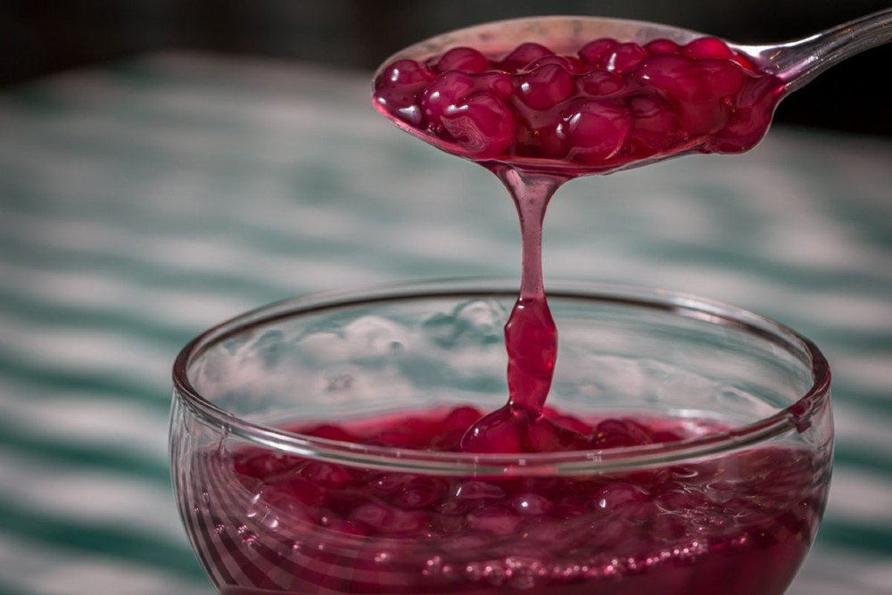
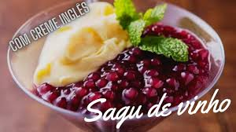

Como fazer Sagu com vinho
Sagu de Vinho Tinto Gourmet (Passo a Passo)
Ingredientes:
- 1 xícara de sagu de mandioca de boa qualidade.
- 4 xícaras de água.
- 3 xícaras de vinho tinto (escolha um que você beberia, como um Merlot ou Cabernet).
- 2 xícaras de suco de uva integral (isso dá o "brilo" e a cor rubi).
- 1 ½ xícara de açucar.
- 2 paus de canela.
- 5 cravos-da-índia(Remova a "bolinha" para não amargar).
- 1 anis estrelado (toque gourmet para coplexidade de sabor).
Modo de Preparo:
- Hidratação (O Truque): Em uma tigela, cubra o sagu com 2 xícaras de água e deixe descansar por 1 hora. Isso faz com que ele cozinhe por igual e não fique com o centro duro.
- Infusão: Em uma panela grande, coloque o restante da água, o vinho, o suco de uva, o açúcar e as especiarias. Leve ao fogo médio.
- Cozimento: Quando começar a ferver, adicione o sagu hidratado (com a água que sobrou na tigela). Abaixe o fogo e cozinhe, mexendo de vez em quando para não grudar, por cerca de 30 minutos.
- O Ponto: Desligue o fogo quando as bolinhas estiverem quase todas transparentes, mas ainda com um pequeno pontinho branco no centro. Elas terminarão de cozinhar no próprio calor.
- Finalização: Retire as especiarias e deixe esfriar em temperatura ambiente antes de levar à geladeira.
Se tudo der certo seu sagu ficará mais ou menos assim

Está bom porém podemos melhorar

Clique na imagem a cima para aprender a fazer o creme inglês
Se você quiser ver a tabela de tempo e a tabela nutriocional Clique Aqui